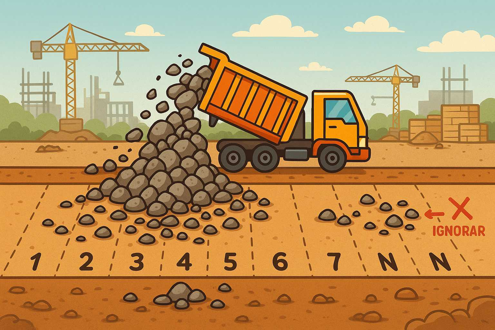

You're in charge of a construction site, and today is rock delivery day.
You already know where each truck will dump its load of rocks. However, these aren’t neatly delivered — each truck drops a big pile in one spot, and the rocks scatter to the nearby sections. You need to calculate how many rocks end up in each section of your worksite.
Your dumping ground is a straight line, divided into N numbered sections (from 1 to N N).
Each truck is described by two values:
X: the section where the truck dumps its load
S: the size of the truck (i.e., how far the rocks will spread)
A truck of size S dumping rocks at section X will distribute rocks like this:
X gets S rocks.
X ± 1 get S - 1 rocks.
X ± 2 get S - 2 rocks.
X ± (S - 1) get 1 rock.
If any rocks spill outside the bounds of the site (i.e., to section 0 or section N + 1), you can ignore them — that’s someone else’s problem.
Your task is to calculate how many rocks end up in each section after all the trucks have dumped their loads.
The first line contains two integers N and M (1 ≤ N, M ≤ 100'000) — the number of sections and the number of trucks.
The next M M lines each contain two integers X and S (1 ≤ X ≤ N, 1 ≤ S ≤
5) — the dumping section and the size of the truck.
Print a single line with N integers, separated by spaces, representing the number of rocks in each section from 1 1 to N after all trucks have dumped their rocks.
Input
10 1 5 3
Output
0 0 1 2 3 2 1 0 0 0
Input
10 2 5 3 9 5
Output
0 0 1 2 4 4 4 4 5 4
Estás responsável por organizar o empilhamento das pedras necessárias para um conjunto de obras em curso, e hoje é dia de entrega de pedras.
Já sabes onde cada camião vai despejar a sua carga de pedras. No entanto, estas não são entregues de forma ordenada — cada camião despeja uma grande pilha num ponto, e as pedras espalham-se pelas secções vizinhas. O teu objetivo é calcular quantas pedras acabam em cada secção do terreno.
O terreno de descarga é uma linha reta, dividida em N secções numeradas (de 1 a N).
Cada camião é descrito por dois valores:
X: a secção onde o camião despeja a sua carga
S: o tamanho da carga do camião (define até onde as pedras se espalham)
Um camião de tamanho S que despeja pedras na secção X irá distribuí-las da seguinte forma:
X recebe S pedras.
X ± 1 recebem S - 1 pedras.
X ± 2 recebem S - 2 pedras.
X ± (S - 1) recebem 1 pedra.
Se algumas pedras saírem fora dos limites do terreno (isto é, para a secção 0 ou para a secção N + 1), podes ignorá-las — isso já não é da tua responsabilidade.
A tua tarefa é calcular quantas pedras existem em cada secção após todos os camiões terem descarregado.
A primeira linha contém dois inteiros N e M (1 ≤ N, M ≤ 100,000) — o número de secções e o número de camiões.
As M linhas seguintes contêm dois inteiros X e S (1 ≤ X ≤ N, 1 ≤ S ≤ 5) — a secção onde o camião descarrega e o tamanho do camião.
Imprime uma única linha com N inteiros, separados por espaços, representando o número de pedras em cada secção, da 1 à N, depois de todos os despejos.
Input
10 1 5 3
Output
0 0 1 2 3 2 1 0 0 0
Input
10 2 5 3 9 5
Output
0 0 1 2 4 4 4 4 5 4